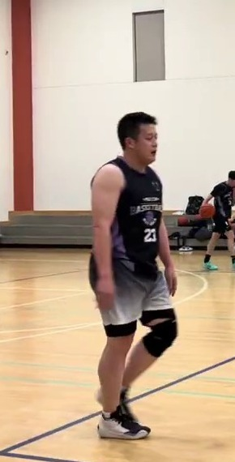
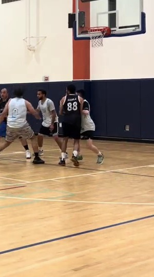
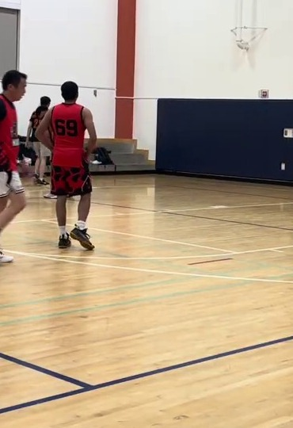
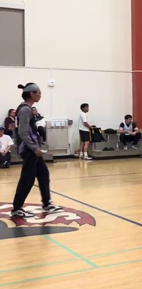
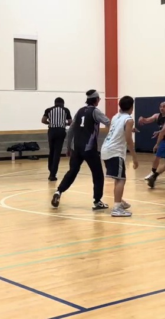

Sample Set
Mad Cow / Working Scout
这版只做三件事：先把号码确认准，再把三个人的场上角色分开，最后给出真正能落地的对位和协防建议。 样本来自 `2026-04-16`、`2026-04-23`、`2026-04-28` 三场 YouTube 比赛录像， 另加你提供的参考图做 jersey 确认。
Sample Set
Jersey Map
Team Read
三人不是同一种威胁。`Yang` 更像先把第一下压进去的人，`Sean` 更像接应后顺势完成的点， `Akila` 更像中间那层连接器和第二拍 creator。
Confidence
这不是完整逐回合 chart，而是一版角色优先、针对点优先的工作报告。 号码确认是高置信度；出手热区和效率结论仍是中等置信度。
Pressure Order
Best Team Idea
`Mad Cow` 这三人最难受的点不是单防贴死，而是第一线把节奏拖慢、第二线把视野压窄。 让他们都从“舒服的第一决定”变成“拥挤下的第二决定”。

Mad Cow / #23
强身体的一号/二号位持球点
三个人里，`Yang` 最像要先把防线压缩的人。样本里他给人的第一印象不是飘着打， 而是更愿意用身体吃空间、把回合推到更深一拍。
提前堵住直线启动，尤其别让他轻松进到罚球线附近再决定。 如果他是带着身体优势往里压，后面的轮转会被连带拉开。
相比让他舒服地下坡或转身继续推进，更能接受他在被逼停后的定点出手、 或者停球后把进攻交回给别人重新组织。
第一线站位别退太深，提前在 nail 附近准备第二人。核心不是抢断， 而是让他更早收球、更早传球，别让他带着惯性撞到禁区里。


Mad Cow / #88 or #69
次级 creator + 中间层 connector
`Akila` 不是单纯站角落等球的人。样本里他经常处在回合中段能摸到球的位置， 能做接应、能做二次发起，也能在节奏慢下来时继续把球往下一个点送。
最怕的是让他在 slot 或中路舒服看完整个回合，再决定自己打还是喂队友。 一旦他带着空间看到第二拍，回合会比 `Sean` 那条线更完整。
相比让他顺着视野把回合读完，更能接受他在拥挤里勉强 finish， 或者在没有预热节奏时直接拔中远距离。
Closeout 要短而结实，别飞。优先让他看到第二人，再逼他把球停在第一道帮助附近。 红衣 `#69` 的主题样本也说明，他不是换了球衣就会被藏起来的人。


Mad Cow / #1
次级得分点 / 接应后顺打的长步幅 wing-guard
`Sean` 更像接球后把优势继续放大的人，而不是每一回合都自己先开锁的人。 他在样本里更常出现在弱侧、slot 接应位和第二触球位。
别给他舒服的 catch-and-go。只要接球点太干净，他的长步第一下会把人带进追防状态， 那时他就比静态单打危险得多。
比起让他顺步冲下去，更能接受他在第一下被卡住后自己变成回合主控， 或者被迫多拍运球再去找答案。
站位先卡接球路线，接到后把他往协防里送。重点不是贴满全场， 而是让他从“顺势 finish”变成“自己重新造回合”。
Next Pass